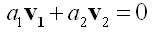
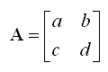
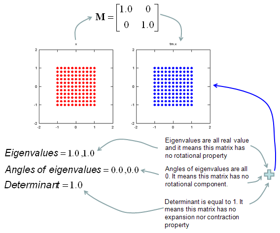
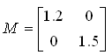
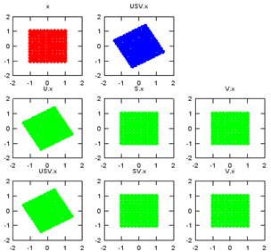
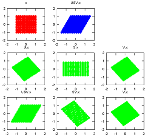

Vector/Matrix Home : www.sharetechnote.com
Matrix would be one of the most important and widely used mathematical tool in engineering. I personally think that you would adapt to almost any engineering field if you are familiar with Differential Equation and Matrix. Personally Matrix is one of the intriguing concept and tools to me. I know many of you would not agree with me especially if you are already got sick and tired of so many calculations and struggling with Linear Algebra course.
- How we use Matrix to solve a real life problem
- Presentation to Matrix
- Simultaneous Equation
- Stochastics
- Neural Network
- Circuit Analysis
- Adjacency Matrix (Graph Theory)
- FEM(Finite Element Method) - Simple Spring Model
- FEM(Finite Element Method) - More Complicated Spring Model
- FEM(Finite Element Method) - Truss
- Inner Product, Dot Product
- Cross Product
- Scalar Triple Product
- Projection - Onto a Line
- Linear Independence
- Intuitive Property of a Matrix
- Eigenvector and Eigenvalue
- Determinant
- Rank
- Geometric/Graphical Meaning of Eigenvalue and Determinant
- Matrix of Complex Numbers
- Decomposition
- LU Decomposition
- Before you move on
- Conjugate Transpose, Hermitian Conjugate
- Hermitian Matrix
- Orthogonal Matrix
- Orthonomality
- Singular Matrix
- Unitary Matrix
- Singular Valude Decomposition (SVD)
How we use Matrix to solve a real life problem
My understanding of use model for Matrix in engineering field is as shown in the following illustration. Try to interpret the illustration from left to right.

i) First, represent your problem in real life into a Matrix form (You will see a couple of examples of these represetations from following sections).
ii) And then you would apply various mathematical operations to the Matrix and get the outcome of the operation. (Determining what kind of operatioin you should perform and understand why you should apply those operations should be the critical part at this step).
iii) Finally you have to interpret the result of step ii) into your real life situation.
I think one of the biggest reason why your linear algebra course does not interest you (even scarying you away) is that it focus mostly in step ii) and in many case you would not feel such a strong interest to anything which does not show any close relationships to real life problems.
In this page, I would provide you some examples to trying to show you the step i) and step iii) as much as possible and I will keep adding those examples. Of course, only a couple of examples explained here would not be enough to give you strong motivation and understandings on Matrix. But I hope it can at least be a small trigger.
Before I put my own words, I would like to strongly recommend you to see an excellent lecture by Proffer Stephen Boyd. Introduction to Linear Dynamical System. If you want to see the full course, visit here. Interestingly, this lecture shows exactly the approach that I want to take when I am studying Matrix.
- Simultaneous Equation
- Stochastics
- Neural Network
- Circuit Analysis
- Adjacency Matrix (Graph Theory)
- FEM(Finite Element Method) - Simple Spring Model
- FEM(Finite Element Method) - More Complicated Spring Model
- FEM(Finite Element Method) - Truss
The geomatrc meaning of Inner Product is as follows. Inner Product is a kind of operation which gives you the idea of angle between the two vectors.
There are several different ways of representing/calculating the inner product. Equation (1) gives you the geometric meaning of inner product. Equation (2) would not shows you any idea of visualization, but it gives you a way of calculating the inner product with very simple multiplication and sums. Equation (3) is the form representing the inner product as a multiplication of two vectors.
I see two major application of the inner product. One is to figure out the angle between the two vectors as illustrated above. (First, you calculate the inner product using Equation (2) and with the result and equation (1), you can figure out the angle).
This angle in turn has additional implication. If this angle is 90 degree(0.5 pi), it means
- the result of the inner product becomes 0
- the correlation between the two vector is 0.
- the two vectors are independent to each other.
If this angle is 0 degree, it means
- the result of the inner product becomes max (multiplication of length of two vectors)
- the correlation between the two vector is 1.
- the two vectors are totally dependent to each other.
If this angle is between 0 and 90, the value is between min(0) and max value and they are partially dependent to each other.
Second application is nothing to do with geometric meaning, but it is very handy form of mathematical representation of "Sum of Multiplication/Sume of Times" as shown in "Sum of Times" page.
One important thing you have to remember is that the result of inner product of two vectors is a scalar.
It is pretty complicated process to calculate the cross product in terms of calculation process, but it is not that complicated to understand the geomatrical meaning for it. (Fortunately you don't have to calculate this by your hand. A lot of sotware package out there would do this for you. So what you have to do is just to understand the concept).
First thing you remember about the cross product is that the result of cross product of two vectors is also a vector (you would remember the result of inner product of two vectors is a scalar). By the definition of vector, it has both direction and size(magnitude).
Then, what is the direction of the resulting vector of cross product ?
It is normal (perpendicular) to the plane on which the two vectors sits on. It implies that if you get the cross product of two vector, you will get a vector which is normal to the two input vectors. This is one of the reason why 'cross product' is such a useful tool.
Then, what is the size(magnitude) of the resulting vector of cross product ?
It is the area of the area surrounde by the two vectors.
Following is the illustration showing what I described above.
Following is the concept of Cross Product represented in mathematical formula. The calculation shown in equation (2) may look pretty simple, but if the vector goes into higher dimesion the calculation goes exponentially complicated. But as I said, don't worry about this. Software would do it for you.
We have learned very two important operations for vectors, inner product and outer product. Combining these two operation we can produce extremely useful tool. This tool is so widely used that it has it's own name, called 'Scalar Triple Product'.
Let me give you a situation where we can use the concept of Scalar Triple Product.
We have a multiple planes connected to each other with different tilt and light (sun) is shining over them as shown below.
Now let's think about which plane (plate) would have the strongest light. Any idea ?
Intuitively you would guess that the plate getting the light closer to right angle (perpendicular to the plane/plate).
How can we know how closer to the right angle a plate is getting the light ? The idea is like this.
i) Draw a vector which is perpendicular to the plane/plate(Let's label this vector as s).
ii) Draw a vector which connector a corner of the plate to the center of the light(Let's lavel this vector as l )
iii) Calculate the angle between the two vectors (s and l). If this angle closer to 0, it means the it is getting the light closer to the right angle.
Now let translate this procedure into mathematical forms.
First, we have to get a vector which is perpendicular (normal) to a plane (plate). Any idea on this ?
This is where you can use the concept of 'Cross Product'. If you draw two vectors starting a corner of the plate running along the sides as marked in green arrow shown below. The cross product of the two vectors would give you a vector which is perpendicular to the plate.
Now the next step would be to figure out the angle between the angle between vector s and l. This is what Inner Product is used for.
Following is the mathematical description for the procedures explained above.
First, get the vector s which is perpendicular to a plate by 'Cross Product' as shown below.
Second, by a little bit of rearrangement of Inner Product equation, you can get the angles between the vector s and vector l.
I will talk about "Projection" in this section. Here goes an intuitive situation describing the concept of projection.
Let's look at the following illustration. Here I have an vector labeled as v (Blue arrow) and the starting point of it is attached to a line labeled as l. Now we have a sun (light) shining right above the vector. Then you would have a shadow of the vector v on the line. The shadow would like like the vector labeled as u(Black arrow). This shadow vector is called a 'Projection' of the vector v.
Now let's think about how we get this shadow vector (projection) mathematically. The method is as described below.
The conclusion (final equation) is as follows.
I would not prove this equation itself. You can refer to Linear Algebra text book if you are interested in how this equation are drawn. But it would be worth understanding each component of this equation as show below.
Then... Let's think about why we need this kind of operation. You can utilize this one to get the shadow of an object on computer graphics.. and more common application in a variety of application it is used to get a vector which connecting a point to a line in the shortest path. Just taking the magnitue of vector w in the following illustration gives you the distance (shortest path) between a point and a line.
Linear Independence is an indicator of showing the relationship among two or more vectors. Putting it simple, "Linear Independence" imply "No correlation between/among the vectors". The mathematical definition of linear independence is as follows.
Like many other mathematical definitions, it is hard to grasp a clear understanding without going through examples.
Let's suppose we have two vectors and want to check if the two vectors are 'linearly independent" or not.
Applying the two vectors into the definition of linear independecy, we can express it as follows.
If I assume the two vectors are 2x1 vector, we can describe each component of the above mathemtical expressions as follows. As you see in this example, if we have only two vectors and the direction of vectors are different, they are 'linearly independent'.

If the two vectors are aligned in the same direction or in completely opposite direction (180 degree difference), we can easily find a non-zero a1,a2 value to make these two vectors 'NOT linear independent'.
Now let's see another example showing concrete numbers. Let's assume that we have two vectors as shown below.
Let's plug these two vector into the definition of linear independence. It becomes as follows.

If we plug the values into the expression, we get following expression.
Now the question is "Can we find any non-zero a1, a2 to satisfy this equation ?" and the result and the conclusion comes as follows.
Then the last question would be "Why the linear independency is important ?", "How do we utilise this concept ?". The importance of this concept would be for calculating the Rank of a matrix or for investigating the existence of solution of a simultaneous equation.
Intuitive Property of a Matrix
My own image for a matrix is a kind of machine that is doing things as follows. As you see in the illustration, Matrix is taking in a shape (geometrical shape/object) and transform (change shape) them in mainly three different way as follows.
i) Scale (magnify or shrink)
ii) Rotate
iii) Skew
In reality, a matrix can do more than one type of transformation like "Scale and Skew", "Scale and Rotate and Skew" etc.
I will talk about this kind of transformation in this section and I hope you can have some intuitive understanding of the propery of a matrix since it can be visualized as in this section.
I think one of the best way to understand the characteristics of a Matrix is to apply it for an shape in a graphical coordinates and observe the result. Of course, there would be a certain limitation in this method since we can only visualize three dimensional shape and as a result the dimension of the matrix we can visualize would be 3 x 3 (or 4 x 4 in some cases). But if you build up a solid intuitive understanding of a properties of a matrix in this way, you can easily extend the understanding to any size of the matrix and, more importantly, you can understand more easily a mathematical model represented in the matrix format.
I will use a shape in two dimensional coordinate and 2 x 2 matrix applying to the shape on the coordinate. Here you see coordinates labeled (x1,y1) and (x2,y2). (x1,y1) represents each points before it is transformed by the matrix and (x2,y2) is the new points after (x1,y1) is transformed by the matrix.
Let's look at the first case. The first matrix is what we call Identity Matrix which has the value '1' in all the elements on diagonal line running from left top to right bottom and all the other elements are set to be '0'.
What is the result of the transformation of a shape transformed by the Identity Matrix ? The answer is "No change".
Next look at another matrix shown below. This matrix also looks similar to diagonal matrix but not exactly same. The difference is that the first element on the diagonal line is '-1' in stead of '1'. What is the result ?
The shape is flipped around y axis.
Next look at another matrix shown below. This matrix also looks similar to diagonal matrix but not exactly same. The difference is that the second element on the diagonal line is '-1' in stead of '1'. What is the result ?
The shape is flipped around x axis.
Next look at another matrix shown below. In this case, all the elements on the diagonal lines is set to be '-1' instead of '0'. What is the result ?
It became reflected around the point (0,0). You can interpret this in two steps.
At the first step, the shape is flipped around y axis. and at the second step the shape is fliped around x axis.
Now let's look at another matrix as shown below. This time you see all '0's on the diagonal line and now you see a non-zero value out side of diagonal line. What is the result ?
The image shears.
Now let's look at another matrix as shown below. This time you see the non-zero value in all the elements. This is tricky to analyze since these matrix can do almost everything described above.. but if the numbers in the elements can be represented as trigonometrix functions in the following format. This matrix can rotate the image as shown below.
Actually this is only a few of the examples.. you can try any numbers in the matrix and apply to some shape and try to correlate those numbers to the result of the transformation until you build up your own intuition of figuring out the characteristics of a matrix.
One of the most useful/important but very hard to understand the practical meaning would be the concept of Eigenvector and Eigenvalue. You can easily find the mathematical definition of eigenvalue and eigenvector from any linear algebra books and internet surfing.
I will start with the samething, i.e mathematical definition. Mathematical definition of Eigenvalue and eigenvectors are as follows.
Let's think about the meaning of each component of this definition. I put some burbles as shown below.
When a vector is transformed by a Matrix, usually the matrix changes both direction and amplitude of the vector, but if the matrix applies to a specific vector, the matrix changes only the amplitude (magnitude) of the vector, not the direction of the vector. This specific vector that changes its amplitude only (not direction) by a matrix is called Eigenvector of the matrix.
Let me try explaining the concept of eigenvector in more intuitive way. Let's assume we have a matrix called 'A'. We have 5 different vectors shown in the left side. These 5 vectors are transformed to another 5 different vectors by the matrix A as shown on the right side. Vector (1) is transformed to vector (a), Vector (2) is transformed to vector (b) and so on.
Compare the original vector and the transformed vector and check which one has changes both its direction and magnitude and which one changes its magnitude ONLY. The result in this example is as follows. According to this result, vector (4) is the eigenvector of Matrix 'A'.
I hope you clearly understand the meaning of eigenvectors.
Now we know eigenvector changes only its magnitude when applied by the corresponding matrix. Then the question is "How much in magnitude it changes ?". Did it get larger ? or smaller ? exactly how much ? The indicator showing the magnitude change is called Eigenvalue. For example, if the eigenvalue is 1.2, it means that the magnitude of the vector gets larger than the original magnitude by 20% and if the eigenvalue is 0.8, it means the vector got smaller than the original vector by 20 %. The graphical presentation of eigenvalue is as follows.
Now let's verbalize our Eigenvector and Eigenvalue definition.
Matrix multiplied to its Eigenvector is same as the Eigenvalue multiplied to its Eigenvector.
Then very important question would be "Why we need this kind of Eigenvector / Eigenvalue ?" and "When do we use Eigenvector / Eigenvalue ?".
The answer to this question cannot be done in a short word, the best way is to collect as many examples as possible to use these eigenvector/eigenvalues. You can find one example in this page, the section Geometric/Graphical Meaning of Eigenvalue and Determinant
i) When you have a situation in which you have to multiply a matrix to a vector repeatedly (for example, let's assume that you have to multiply a matrix 100 times), it would require a lot of calculation. But you can predict this result just by looking at the eigenvalues without doing 100 times matrix multiplication. (You can see this kind of cases a lot in stochastics).
ii) You can use the eigenvectors and eigenvalues to get the solution of linear differential equations (see here).
iii) In computer graphics, a matrix is multiplied to several hundreds of points (vectors) to change the shape of an image represented by the points. By analyzing the eigenvectors of the matrix (transformation matrix), you can predict the overall result of the change of the shape without doing the several hundreds matrix x vector multiplication. (see here)
For more examples, refer to http://wiki.answers.com/Q/What_are_the_applications_of_Eigenvalue_and_eigenvector_in_Engineering
To be honest how to describe the mathemtical definition of a Matrix that can apply to any size of matrix. As you may learned in High school math or linear algegra course, the definition of Determiant for 2 x 2 matrix as follows is very simple as shown below.

Determinant of A = ad-bc
But this kind of definition would not help much about understanding the real meaning of determinants and the calculation process gets exponentially complicated as the size of the matrix gets larger. If the size of matrix is equal to or greater than 4 x 4, it would be almost impossible to calculate it by hand.
So I would focus more on explaining the practical meaning of the determinants rather than calculation process.
Practical meaning of Determinant of matrix of 2 x 2 is as follows. It is the area of the shape enclosed by the two vectors which are made out of each row of the matrix.
In some cases as follows, the determinants gets 0.
Let's look into the case of 3 x 3 matrix as follows.
The practical meaning of Determinant of matrix is the volume of the object defined by the three vectors which is made out of each row of the matrix.
If the size of matrix gets equal to/higher than 4 x 4, it would be difficult to visualize the definition geometrically as above, but I hope you can have your own image at least.
Real importance of Determinant can be described as follows. You can understand basic characteristics of a matrix from determinant. When you apply a Matrix to vectors, you can make pretty reasonable guess just by looking at Determinant without doing all the calculation. If the process requires only one time calculation (e.g, one time multiplication of Matrix and vector) it would be no problem to perform the calculation, but if you have to do many times it would be handy to make a inference of the result from Determinant rather than doing all the 'matrix x vector' multiplication.
You will see some examples of using the determinants of Matrix in Geometric/Graphical Meaning of Eigenvalue and Determinant
Rank is an indicator that shows how many of the vectors comprising a matrix are linearly independent to each other.
For example, let's suppose we have a matrix as follows.
Let's take each row of the matrix and construct vectors as follows. (These vectors are called 'row vector')
Now the question is how many of these vectors are linearly independent to each other ? The answer to this question is the Rank of the matrix.
(Refer to "Linear Independent" definition)
Geometric/Graphical Meaning of Eigenvalue and Determinant
My own image for a matrix is a kind of machine that is doing things as follows. As you see in the illustration, Matrix is taking in a shape (geometrical shape/object) and transform (change shape) them in mainly three different way as follows.
i) Scale (magnify or shrink)
ii) Rotate
iii) Skew
In reality, a matrix can do more than one type of transformation like "Scale and Skew", "Scale and Rotate and Skew" etc.
In this sections, I will show you how a matrix transforms a given image (a set of dots). For each example, I transformed 100 dots.. it means that I had to calulate "A x v" type of vector multiplication 100 times. It would have been almost undoable if I had to do it with pen and paper unless I had an extraordinary patience. (Definately I am not such a patient person -:)). Fortunately, I have a software with which I can do this kind of things relatively easy. Following is the source script that I created for these examples. You can apply whatever 2 x 2 matrix just by changing "tm = [1.0 0.0;0.5 1.0]" part.
There are other very important points in these examples. For each example, I (matlab source script) calculated the following values and I put down a short comments on what kind of information you can get from these values.
i) Eigenvalue
ii) Angle of each Eigenvalue
iii) Determinant
When you were learning Eigenvalue, Determinant.. the first question you might have would be "What are these for ?" "Why do we have to calculate these values ?". This is one of the examples in which you can use eigenvalues and determinant in very useful way.
If there is no computer and I am asked to get overall image of the transformation of 100 points as in this example, I would definitely calculate eigenvalue and determinant and make a reasonable guess of the final result, rather than trying to 100 times of "A x v" calculation.
This kind of interpretation of Eigenvalue and Determinant is not only for geometrical transformation, but also can be useful almost any system represented as a Matrix system (e.g, Control System, Stochastics, Structure Analysis etc). So I strongly recommend you to go through in very detail and try a lot of example matrix with the Matlab/Octave script and get some intuitive understandings of your own.
ptList_x=[];
ptList_y=[];
for y=-1.0:0.2:1.0
for x=-1.0:0.2:1.0
ptList_x=[ptList_x x];
ptList_y=[ptList_y y];
end
end
ptList_v = [ptList_x' ptList_y'];
ptList_v = ptList_v';
tm = [1.0 0.0;0.5 1.0]
tm_eigenvalue = eig(tm)
Angle_of_eigenvalues = arg(tm_eigenvalue)
tm_determinant = det(tm)
ptList_v_tm = tm * ptList_v;
ptList_v_tm_x = ptList_v_tm(1,:);
ptList_v_tm_x = ptList_v_tm_x';
ptList_v_tm_y = ptList_v_tm(2,:);
ptList_v_tm_y = ptList_v_tm_y';
subplot(1,2,1);
plot(ptList_x,ptList_y,'ro','MarkerFaceColor',[1 0 0]);axis([-2 2 -2 2]);title('x');daspect([1 1]);
subplot(1,2,2);
plot(ptList_v_tm_x,ptList_v_tm_y,'bo','MarkerFaceColor',[0 0 1]);axis([-2 2 -2 2]);title('tm.x');daspect([1 1]);

In the above section, you saw some examples of how a matrix can transform a shape in a coordinate. But all the elements in the matrix and the numbers representing a point in a coordinate were real numbers.
In this section, you would see examples where complex numbers are used in both matrix and coordinate. As you may see in complex number section, the operation of the complex number itself has some geometric transformation properties. Therefore, the final outcome of the transformation of complex coordinate and complex matrix are even more complicated. Only real practice on your own would give you the real meaning of those transformation.
This kind of transformation are used pretty often in MIMO (Multiple Input Multiple Output) in wireless communication.
Let's directly jump into some examples. Following is a Matlab/Octave code that I wrote. v1, v2, v3, v4 are a complex number representing a constellation point in I/Q coordinate. m1,m2,m3 is a complex transformation matrix. c1, c2 can be any two complex numbers selected from {v1, v2, v3, v4}.
Just try this code and observe the result. Change any of v1,v2,v3,v4, c1,c2, m1,m2,m3 and rerun the code. Repeat this process until your brain get the overall pictures of how this transformation work.
v1 = 1 + j;
v2 = -1 + j;
v3 = -1 - j;
v4 = 1 - j;
c1 = v1;
c2 = v2;
m1 = 1/sqrt(2).*[1 0; 0 1]
m2 = 1/2.*[1 1; 1 -1]
m3 = 1/2.*[1 1; j -j]
m1_c12 = m1 * [c1;c2]
m2_c12 = m2 * [c1;c2]
m3_c12 = m3 * [c1;c2]
subplot(2,2,1);
plot(real(v1), imag(v1),'ro','MarkerFaceColor',[1 0 0], 'MarkerSize',10, ...
real(v2), imag(v2),'go','MarkerFaceColor',[0 1 0], 'MarkerSize',10, ...
real(v3), imag(v3),'bo','MarkerFaceColor',[0 0 1], 'MarkerSize',10, ...
real(v4), imag(v4),'yo','MarkerFaceColor',[1 1 0], 'MarkerSize',10);
axis([-1.5 1.5 -1.5 1.5]);
title('A');
subplot(2,2,2);
plot(real(c1), imag(c1),'ro','MarkerFaceColor',[1 0 0], 'MarkerSize',10, ...
real(c2), imag(c2),'go','MarkerFaceColor',[0 1 0], 'MarkerSize',10, ...
real(m1_c12), imag(m1_c12),'ko','MarkerFaceColor',[0 0 0], 'MarkerSize',10);
axis([-1.5 1.5 -1.5 1.5]);
title('B = m1 * [c1;c2]');
subplot(2,2,3);
plot(real(c1), imag(c1),'ro','MarkerFaceColor',[1 0 0], 'MarkerSize',10, ...
real(c2), imag(c2),'go','MarkerFaceColor',[0 1 0], 'MarkerSize',10, ...
real(m2_c12), imag(m2_c12),'ko','MarkerFaceColor',[0 0 0], 'MarkerSize',10);
axis([-1.5 1.5 -1.5 1.5]);
title('C = m2 * [c1;c2]');
subplot(2,2,4);
plot(real(c1), imag(c1),'ro','MarkerFaceColor',[1 0 0], 'MarkerSize',10, ...
real(c2), imag(c2),'go','MarkerFaceColor',[0 1 0], 'MarkerSize',10, ...
real(m3_c12), imag(m3_c12),'ko','MarkerFaceColor',[0 0 0], 'MarkerSize',10);
axis([-1.5 1.5 -1.5 1.5]);
title('D = m3 * [c1;c2]');
As the first example, I selected v1 and v2 as the two numbers to be transformed by the matrix. Following is the numerical result of the transformation. m1_c12 is the result of transformation of (c1,c2) by the matrix m1. m2_c12 is the result of transformation of (c1,c2) by the matrix m2. m3_c12 is the result of transformation of (c1,c2) by the matrix m3.
c1 = v1;
c2 = v2;
m1_c12 =
0.70711 + 0.70711i
-0.70711 + 0.70711i
m2_c12 =
0 + 1i
1 + 0i
m3_c12 =
0 + 1i
0 + 1i
Following is the graphical representation of the result of this transformation. Graph A shows the four complex numbers v1,v2,v3,v4 in I/Q coordinate.
Red = v1
Green = v2
Blue = v3
Yellow = v4
Black = the result of transformation of (c1,c2) by m1, m2, m3
In the second example, I selected v1 and v3 as the two numbers to be transformed by the matrix. Following is the numerical result of the transformation. m1_c12 is the result of transformation of (c1,c2) by the matrix m1. m2_c12 is the result of transformation of (c1,c2) by the matrix m2. m3_c12 is the result of transformation of (c1,c2) by the matrix m3.
c1 = v1;
c2 = v3;
m1_c12 =
0.70711 + 0.70711i
-0.70711 - 0.70711i
m2_c12 =
0 + 0i
1 + 1i
m3_c12 =
0 + 0i
-1 + 1i
Following is the graphical representation of the result of this transformation. Graph A shows the four complex numbers v1,v2,v3,v4 in I/Q coordinate.
Red = v1
Green = v2
Blue = v3
Yellow = v4
Black = the result of transformation of (c1,c2) by m1, m2, m3
In the third example, I selected v1 and v4 as the two numbers to be transformed by the matrix. Following is the numerical result of the transformation. m1_c12 is the result of transformation of (c1,c2) by the matrix m1. m2_c12 is the result of transformation of (c1,c2) by the matrix m2. m3_c12 is the result of transformation of (c1,c2) by the matrix m3.
c1 = v1;
c2 = v4;
m1_c12 =
0.70711 + 0.70711i
0.70711 - 0.70711i
m2_c12 =
1 + 0i
0 + 1i
m3_c12 =
1
-1
Following is the graphical representation of the result of this transformation. Graph A shows the four complex numbers v1,v2,v3,v4 in I/Q coordinate.
Red = v1
Green = v2
Blue = v3
Yellow = v4
Black = the result of transformation of (c1,c2) by m1, m2, m3
In the fourth example, I selected v1 and v1 again as the two numbers to be transformed by the matrix. Following is the numerical result of the transformation. m1_c12 is the result of transformation of (c1,c2) by the matrix m1. m2_c12 is the result of transformation of (c1,c2) by the matrix m2. m3_c12 is the result of transformation of (c1,c2) by the matrix m3.
c1 = v1;
c2 = v1;
m1_c12 =
0.70711 + 0.70711i
0.70711 + 0.70711i
m2_c12 =
1 + 1i
0 + 0i
m3_c12 =
1 + 1i
0 + 0i
Following is the graphical representation of the result of this transformation. Graph A shows the four complex numbers v1,v2,v3,v4 in I/Q coordinate.
Red = v1
Green = v2
Blue = v3
Yellow = v4
Black = the result of transformation of (c1,c2) by m1, m2, m3
Decomposition is a method of splitting a matrix into multiplication of multiple matrix in the following form.
M = AB..N
How many matrix you split M into and the characteristics of splitted matrix varies depending on each specific decomposition method.
Actually 'breaking one thing into multiple other things' is one of the most common techniques in mathematics. For example, we often break a number into multiples of other numbers as follows.
15 = 2 x 3 x 5
We also break a polynomial into the multiples of other polynomials as shown below.
x^4 - 5 x^3 - 7 x^2 + 29 x + 30 = (x+2)(x+1)(x-3)(x-5)
Question is "Why we do this kind of break down ?". Sometimes we may do this kind of thing just for mathematical fun or curiosity, but in most case (especially in engineering area) we do this because we can get some benefit from it. For example, if you are asked to plot a graph for x^4 - 5 x^3 - 7 x^2 + 29 x + 30, you may have to do a lot of work (a lot of punching keys on your pocket calculator), but if you break the polynomial into (x+2)(x+1)(x-3)(x-5), you would be able to overal shape of the graph without doing even single calculation. Samething applies to Matrix decomposition. We decompose a Matrix into multiple other matrices because there are advantages doing it. What kind of benefit you can get from the matrix decomposition ? We can think of mainly two advantages
- it helps getting solution for a matrix equation with very large number of elements
- it helps you understand the characteristics of the original matrix (or original system equation that the matrix represents)
Then you may ask "Why I don't see this kind of benefit in the linear algebra course ?". "It just look like trying to make simple things more complex.", "It is seems to be designed just to give headache to students".
Mainly two reasons for this
- Linear Algebra textbook or the course hardly mention the practical meaning and advanges of them. They just shows calculation process.
- Most of textbook examples are very small sized matrix from a small set of system equations. In this case, the overhead of decomposing the matrix is greater than the benefit you can get from the process. So you wouldn't see any benefit from it and keep grumping "Why do I have to do this kind of meaningless stuffs".
However if you are given a matrix equation with a huge matrix (like 1000000 x 1000000), then you would start seeing the benefit of doing decomposition. Of course, you cannot decompose 1000000 x 1000000 by hand. You have to use computer. Then you may ask "If I use computer, why bother to decompose ? Computer would do the calculation directly from the original matrix". But in reality it is not. If the size of matrix is very large, there would be huge differences between with and without decomposition even for the high performance computer.
See http://en.wikipedia.org/wiki/Matrix_decomposition and see LU Decomposition in this page as a specific example. (I will keep adding more examples when I have chance)
LU decomposition is a method to split (decompose) a matrix into two matrix product. One of these two matrix(the first part) is called 'L' matrix meaning 'Lower diagonal matrix' and the other matrix(the second part) is called 'U' matrix meaning 'Upper diagonal matrix'. Simply put, LU decomposition is a process to convert a Matrix A into the product of L and U as shown below.
A = LU
I would not explain about how you can decompose a matrix into LU form. The answer is "Use software" -:). I would talk about WHY.
Let's assume that we have a matrix equation (Linear Equation) as shown below.
Don't look into each elements yet. Just get around 100 steps back away from this and look at the overall pattern of the matrix. Can you see a pattern as shown below ? You see two area marked as triangles. Green triangle shows all the elements from diagonal line and upper diagonal part. The elements in this triangle is non-zero values. Violet triangle shows the elements of lower diagonal part which is all zero.
This form of matrix is called 'U' form matrix, meaning 'Upper diagonal matrix'. Why this is so special ?
It is special because it is so easy to solve the equation. Now let's think about how we can solve this equation.
Let's look the last row (4th row in this case). How can I figure out the value for x4 ? You would get it right away because there is only x4 term and j and y4 are known values.
Once you get x4 and plug in the x4 value into row 3, then you would get x3 value.
Once you get x3 and plug in the x3 value into row 2, then you would get x2 value.
Once you get x2 and plug in the x2 value into row 1, then you would get x1 value.
If it is not clear with you, it would be a little clearer if you convert the matrix equation into simultaneous equation as shown below.
Start from the last equation and get x4 first and repeat the process described above.
If this process is still unclear,just play with real numbers. Put any numbers for a,b,c,d,e,f,g,h,i,y1,y2,y3,y4 and try to get x1,x2,x3,x4 as explained above.
If you tried this as explained, one thing you would notice would be "It is so simple to find the solution x1,x2,x3,x4". Just compare this process with what you experienced with general matrix equation solving process you did in your high school math or linear algebra class.
Now let's look into another example of matrix equation as shown below.

Now you would know what I will say. In this case, all the elements along the diagonal line and Lower part of diagonal line is non-zero values. All the values above the diagonal line is all zero.
This form is called 'L' form meaning 'Lower diagonal matrix'.
Why this is so special ?
It is special because it is so easy to solve the equation. Now let's think about how we can solve this equation.
Let's look the first row (the first row in this case). How can I figure out the value for x1 ? You would get it right away because there is only x1 term and a and y1 are known values.
Once you get x1 and plug in the x1 value into row 2, then you would get x2 value.
Once you get x2 and plug in the x3 value into row 3, then you would get x3 value.
Once you get x3 and plug in the x2 value into row 4, then you would get x4 value.
If it is not clear with you, it would be a little clearer if you convert the matrix equation into simultaneous equation as shown below.
Start from the first equation and get x1 first and repeat the process described above.
If this process is still unclear,just play with real numbers. Put any numbers for a,b,c,d,e,f,g,h,i,y1,y2,y3,y4 and try to get x1,x2,x3,x4 as explained above.
If you tried this as explained, one thing you would notice would be "It is so simple to find the solution x1,x2,x3,x4". Just compare this process with what you experienced with general matrix equation solving process you did in your high school math or linear algebra class.
Now let's suppose we have a matrix as shown below. Here all the elements in the matrix is non-zero values.
Now let's assume we can convert this matrix equation into following form. (Don't worry about HOW, just assume you can do this somehow). You already know that this form would make it easier to solve the equation.
Try this example that I found from web. (If the link is missing, try here).
Now you may say.. "You always say 'don't worry about how to solve. just use computer software'". If I use the computer software, why do I have to worry about this kind of conversion. Computer software would not have any problem to solve the equation even with the original form without LU decomposition.
You are right, the computer program would not have any problem with original form.But the amount of time for the calculation is much shorter with LU decomposed form than the original form. When the size of matrix, this time difference would be negligiable, but if the size is very huge (e.g, 10000 x 10000) the time difference would be very huge. If you've done a computer science, you would be familiar with Big O notation to evaluate the computation time. Try compare the computation time for the original matrix form and LU decomposed form. If you are not familiar with this notation, just trust me -:).
Following two YouTube tutorial would give you some insight of LU decomposition including computation time.
I tried to visualize most of the concept in this engineering math pages so that it would give you some intuitive understanding and provide a visual cheat sheet. Even though you think you already understood something, that understanding and memories fades away very quickly but if you gives yourself just brief movent of visual Que of those concept while is fading away, it would refresh your memory and solidify your understanding. But there are some of the concepts which came out of purely mathemtical logics and very hard to visualize it. Also very hard to explain intuitively. Many of the concepts I will explain from now would fall into this group. So it would easily get your bored if you just try to read through. So my recommendation is "Don't try to read this or understand everything in detail now. Try to pick any engineering application in which they often use this concept/notation. Use this part as a quick reference to understand the mathematical model of the application that you picked".
For example, my personal motivation for this section was as follow. When I first read literature about MIMO (Mutiple Input Multiple Output) in mobile communication system, I came across a famous equation as follows. (I would not explain about the meaning of this equation now. Just take a look at the equation itself).
You see the term called "unitary matrix", "singular matrix" and strange looking notation v^H here. You may dimmly recall that you have learned these terms in your linear algebra course but have no idea of the details now.
So I start gooling and reading Wikipedia about these terms and I came across another bunch of terms like orthogonal matrix, congjugate transpose, Hermitian Congugate etc.
Struggling through tons of pages back and forth, finally I thought I would need to understand all of these building block concepts first to read the literature that I am interested in.
Conjugate Transpose, Hermitian Conjugate
Conjugate Transpose is literaly as it says. Get the complex conjugate of the matrix and transpose it. As illustrated below. Especialy try to get familiar with mathemtical symbols for this (final result). This is also called Hermitian conjugate.
Hermitian Matrix is a special matrix, which is same as its conjugate transpose as expressed below.
One example is as follows.
One of the important characteristics of Hermitian Matrix is that Eigenvalues of all Hermitian Matrix are all real as shown in the following example.

Orthogonal Matrix is a special form of matrix that meets the following criteria saying "Transpose of the matrix is same as the inverse of the matrix".
A couple of examples would give you better understanding. Is following matrix (the matrix in the left). Yes it is because its transpose and inverse are same.
Is following matrix (the matrix in the left) orthogonal. Yes it is because its transpose and inverse are same.
Is following matrix (the matrix in the left) orthogonal. No it is not because its transpose and inverse are not same.
Orthonormality is a characteristics of the relations among two of more vectors. It is defined by following characteristics.
- The two vectors should be orthogonal to each other. (It means dot product of the two vectors should be 0).
- Norm of the two vectors (both vectors) should be unit length
Singular Matrix is defined as a Matrix which does not have matrix inverse. It means
- the determinant of Singular Matrix is 0.
- for Ax = b, if A is a singular matrix. Ax=b cannot be solved.
- for Ax = b, if you convert this into simultaneous equation, at least two of the equations are dependent to each other.
Unitary Matrix is a special kind of complex square matrix which has following properties. (U in the following description represents a unitary matrix)
- U*U = UU* = I (U* is the conjugate transpose of the matrix U)
- |det(U)| = 1 (It means that this matrix does not have scaling properties, but it can have rotating property)
- Eigenspaces of U are orthogonal
- U is diagonalizable
- U* is unitary
- U is invertible and the inverse of U is U*
- The columns of U forms an orthnomal basis
- The rows of U forms an orthnomal basis
- The eigenvalues of U lies on the unit circle and they are normal to each other
Singular Value Decomposition(SVD)
Singluar Value Decomposition is a technique which decompose a matrix into three components as follows.
As you recall from the early part of this page, a matrix can magnify or rotate or shear the set of dots(points in a coordinate). SVD is a method to convert the whole transformational process into rotational component, magnifying component and shear component. A graphical presentation of SVD is as follows. (I also posted the Octave/Matlab script that I wrote for this illustration and play with various other matrix('tm' in the script) and see the result until get some intuitive feeling about this process).
Look at the graphs on the top row. The red dots on left graph are transformed by the matrix M to be the blue dots on right graph.
Look at the graph on the middle row. The dots on left graph is the result of transforming M with the matrix U. You can see here that the area of the original rectangle(array of red dots) does not changes, but it get rotated. The dots on the graph in the middle is the result of transforming M with the matrix S. You don't see any rotation here, but you see the original rectangle (array of red dots) get extended in x direction and contracted in y direction. The dots on right graph is the result of transforming M with the matrix V*(V Hermitian). You can see here that the area of the original rectangle(array of red dots) does not changes, but it get rotated.
ptList_x=[];
ptList_y=[];
for y=-1.0:0.2:1.0
for x=-1.0:0.2:1.0
ptList_x=[ptList_x x];
ptList_y=[ptList_y y];
end
end
ptList_v = [ptList_x' ptList_y'];
ptList_v = ptList_v';
tm = [1.25 1;0.2 0.9]
[U,S,V]=svd(tm)
ptList_v_tm = tm * ptList_v;
ptList_v_tm_x = ptList_v_tm(1,:);
ptList_v_tm_x = ptList_v_tm_x';
ptList_v_tm_y = ptList_v_tm(2,:);
ptList_v_tm_y = ptList_v_tm_y';
ptList_v_tm_u = U * ptList_v;
ptList_v_tm_u_x = ptList_v_tm_u(1,:);
ptList_v_tm_u_x = ptList_v_tm_u_x';
ptList_v_tm_u_y = ptList_v_tm_u(2,:);
ptList_v_tm_u_y = ptList_v_tm_u_y';
ptList_v_tm_s = S * ptList_v;
ptList_v_tm_s_x = ptList_v_tm_s(1,:);
ptList_v_tm_s_x = ptList_v_tm_s_x';
ptList_v_tm_s_y = ptList_v_tm_s(2,:);
ptList_v_tm_s_y = ptList_v_tm_s_y';
ptList_v_tm_v = (conj(V)') * ptList_v;
ptList_v_tm_v_x = ptList_v_tm_v(1,:);
ptList_v_tm_v_x = ptList_v_tm_v_x';
ptList_v_tm_v_y = ptList_v_tm_v(2,:);
ptList_v_tm_v_y = ptList_v_tm_v_y';
ptList_v_tm_vs = (conj(V)') * S * ptList_v;
ptList_v_tm_vs_x = ptList_v_tm_vs(1,:);
ptList_v_tm_vs_x = ptList_v_tm_vs_x';
ptList_v_tm_vs_y = ptList_v_tm_vs(2,:);
ptList_v_tm_vs_y = ptList_v_tm_vs_y';
ptList_v_tm_usv = U * S * (conj(V)') * ptList_v;
ptList_v_tm_usv_x = ptList_v_tm_usv(1,:);
ptList_v_tm_usv_x = ptList_v_tm_usv_x';
ptList_v_tm_usv_y = ptList_v_tm_usv(2,:);
ptList_v_tm_usv_y = ptList_v_tm_usv_y';
subplot(3,3,1);
plot(ptList_x,ptList_y,'ro','MarkerFaceColor',[1 0 0]);axis([-2 2 -2 2]);title('x');
subplot(3,3,2);
plot(ptList_v_tm_x,ptList_v_tm_y,'bo','MarkerFaceColor',[0 0 1]);axis([-2 2 -2 2]);title('USV.x');
subplot(3,3,4);
plot(ptList_v_tm_u_x,ptList_v_tm_u_y,'go','MarkerFaceColor',[0 1 0]);axis([-2 2 -2 2]);title('U.x');
subplot(3,3,5);
plot(ptList_v_tm_s_x,ptList_v_tm_s_y,'go','MarkerFaceColor',[0 1 0]);axis([-2 2 -2 2]);title('S.x');
subplot(3,3,6);
plot(ptList_v_tm_v_x,ptList_v_tm_v_y,'go','MarkerFaceColor',[0 1 0]);axis([-2 2 -2 2]);title('V.x');
subplot(3,3,9);
plot(ptList_v_tm_v_x,ptList_v_tm_v_y,'go','MarkerFaceColor',[0 1 0]);axis([-2 2 -2 2]);title('V.x');
subplot(3,3,8);
plot(ptList_v_tm_vs_x,ptList_v_tm_vs_y,'go','MarkerFaceColor',[0 1 0]);axis([-2 2 -2 2]);title('SV.x');
subplot(3,3,7);
plot(ptList_v_tm_usv_x,ptList_v_tm_usv_y,'go','MarkerFaceColor',[0 1 0]);axis([-2 2 -2 2]);title('USV.x');
Let's look into another example shown below.
Look at the graphs on the top row. The red dots on left graph are transformed by the matrix M to be the blue dots on right graph.
Look at the graph on the middle row. The dots on left graph is the result of transforming M with the matrix U. You can see here that the area of the original rectangle(array of red dots) does not changes, and it does not get rotated either(it means that the matrix M does not have any rotational property). The dots on the graph in the middle is the result of transforming M with the matrix S. You don't see any rotation here, but you see the original rectangle (array of red dots) get extended in both x and y direction. The dots on right graph is the result of transforming M with the matrix V*(V Hermitian). You can see here that the area of the original rectangle(array of red dots) does not changes, and it does not get rotated either(it means that the matrix M does not have any rotational property).

Try interpret the following example as described in above example.

Try interpret the following example as described in above example.
